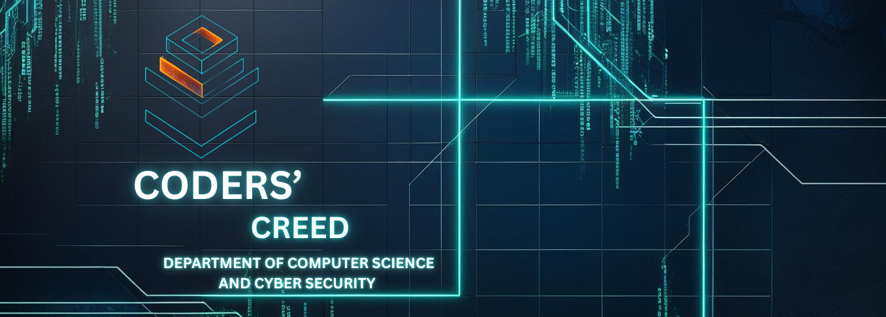

←
The Cybersecurity Engineering branch at SSIT was established in 2023, marking a significant step towards empowering the next generation of digital defenders. Recognizing the growing importance of cybersecurity in today's technology-driven world, SSIT introduced this specialized branch to equip students with the knowledge and skills needed to tackle modern cyber threats.
Cybersecurity Engineering focuses on the protection of computer systems, networks, and data from malicious attacks. It blends core concepts of computer science, ethical hacking, cryptography, and network security to create secure digital environments.
Students in this branch are trained to think critically, detect vulnerabilities, design secure systems, and respond effectively to real-world cyber incidents. From securing enterprise networks to protecting personal data, cybersecurity engineers are vital to maintaining trust and safety in the digital age.
Since its inception, the branch has attracted passionate and tech-savvy students eager to make an impact in one of the most dynamic and essential fields of engineering.

Coders Creed is a dynamic student-led club at SSIT, founded by passionate individuals from the Cybersecurity Engineering branch. The club was created with the goal of fostering interest in ethical hacking, secure coding, and cybersecurity innovation among students.
Coders Creed provides a platform for students to explore real-world cybersecurity practices through hands-on workshops, Capture The Flag (CTF) competitions, hackathons, tech talks, and collaborative projects. It encourages a culture of continuous learning, problem-solving, and peer-to-peer mentoring.
Our mission is to build a community where students can experiment, build, and grow together while staying ahead in the fast-paced world of cybersecurity. Whether you're a beginner or an advanced coder, Coders Creed welcomes all tech enthusiasts who are curious, creative, and committed to making the digital world safer.